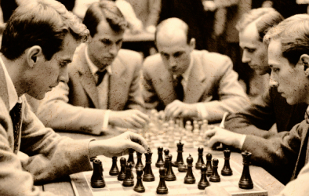

Международный васюкинский турнир
Превратите уездный город в столицу земного шара
Оплатите взнос на телеграммы для организации Международного васюкинского турнира по шахматам
Дело помощи утопающим — дело рук самих утопающих!Шахматы двигают вперед не только культуру, но и экономику!Лед тронулся, господа присяжные заседатели!Дело помощи утопающим — дело рук самих утопающих!Шахматы двигают вперед не только культуру, но и экономику!Лед тронулся, господа присяжные заседатели!
Дело помощи утопающим — дело рук самих утопающих!Шахматы двигают вперед не только культуру, но и экономику!Лед тронулся, господа присяжные заседатели!
Чтобы поддержать Международный васюкинский турнир посетите лекцию на тему: «Плодотворная дебютная идея»

и сеанс одновременной игры в шахматы на 160 досках гроссмейстера О. Бендера
Место проведения:
Клуб «Картонажник»
Дата и время мероприятия:
22 июня 1927 г. в 18:00
Стоимость входных билетов:
20 коп.
Плата за игру:
50 коп.
Взнос на телеграммы:
100 руб. 21 руб. 16 коп.
По всем вопросам обращаться в администрацию к К. Михельсону
Этапы преображения Васюков Будущие источники обогащения васюкинцев
Участники турнира

Дело помощи утопающим — дело рук самих утопающих!Шахматы двигают вперед не только культуру, но и экономику!Лед тронулся, господа присяжные заседатели!Дело помощи утопающим — дело рук самих утопающих!Шахматы двигают вперед не только культуру, но и экономику!Лед тронулся, господа присяжные заседатели!
Дело помощи утопающим — дело рук самих утопающих!Шахматы двигают вперед не только культуру, но и экономику!Лед тронулся, господа присяжные заседатели!